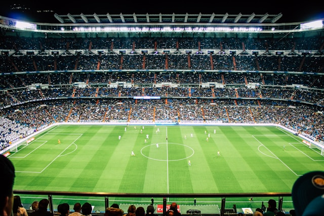

Photos des Matchs
Match de football en plein action.

Une superbe tête au moment crucial du match.
Les deux équipes s'affrontent avec passion.
Portraits de Joueurs
Un moment de concentration avant une frappe au but.
Un joueur célèbre réalisant une passe décisive.

Un joueur célébrant un but magnifique.
Les Terrains de Football

Un beau terrain sous un ciel ensoleillé.
Instants Mémorables
Un instant de joie pure après un but décisif.